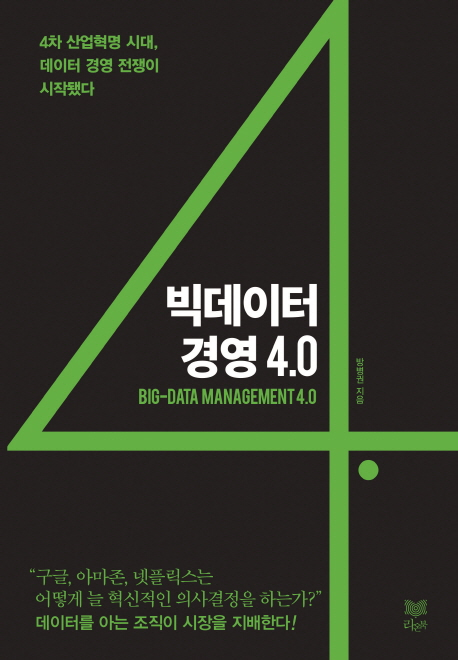

NGP > Book Review > Big Data Managing
|  |
이제는 모두가 다 아는 용어, 4차 산업혁명 시대, 하지만 4차 산업이 중요하고 앞으로 생계나 먹거리에도 결정적인 영향을 미치지만, 일반인들이 할 수 있는 것이 무엇인가, 많이 안다고 기회가 될 수 있을까? 하는 의문도 생긴다.
하지만 4차 산업이 다루는 분야가 다양하며 쉽게 접근하는 만큼, 오류나 문제점도 많다. 또한 접근이 쉬운 만큼, 쉽게 포기하거나 실패도 겪을 수 있다. 특히 4차 산업에서 중요한 역할을 하는 빅데이터를 얼마나 잘 알고 있는지를 생각해 보아야 할 것이다. 이 책을 통해서 4차 산업시대에 필요한 역량과 구체적인 방법을 배우면서 통찰력을 키울 수 있다. 세상이 바뀌면서 경영의 방법이 다양해지고 복잡해지고 있다. 또한 사람들의 생각이나 인식도 발전했다. 4차 산업혁명의 흐름을 읽을 수 있어야만 기회를 잡을 수 있을 것이다. |